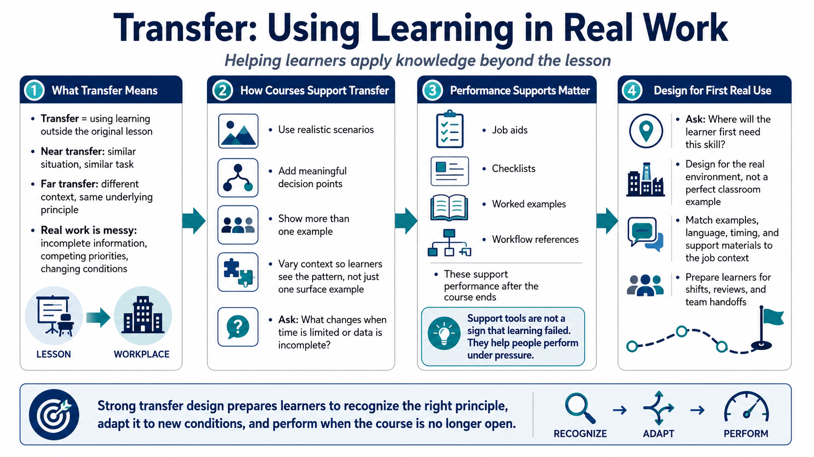

Transfer to Real Work
Connecting to LMS... Progress: in progress

Narration
Transfer is the ability to use learning outside the original lesson. Near transfer happens when the new situation closely resembles the practice activity. Far transfer requires the learner to adapt the principle to a different context. Both matter, but real work often demands more than repeating the same example. Conditions are messy, information is incomplete, priorities compete, and the learner has to decide what applies.
Courses support transfer when they include realistic scenarios, meaningful decision points, and context variation. Instead of showing only one perfect example, the learning experience can show several versions of the problem. What changes when the data is incomplete? What changes when time is limited? What signal tells the learner which method to use? Variation helps learners recognize the underlying pattern rather than memorizing the surface details of a single exercise.
Job aids, checklists, examples, and workflow references can also support transfer. They are not a sign that learning failed. They are part of good performance design, especially for tasks that are complex, infrequent, safety-sensitive, or easy to confuse under pressure. The point is to help people use what they learned when the course is no longer open and the work has to be done in the real environment.
A strong transfer question is, where will this learner first need the skill after the lesson ends? That question changes design decisions. It affects examples, practice conditions, language, timing, and support materials. If the first real use happens during a busy shift, a complex review, or a handoff between teams, the course should prepare learners for that context instead of only preparing them for a clean classroom version.